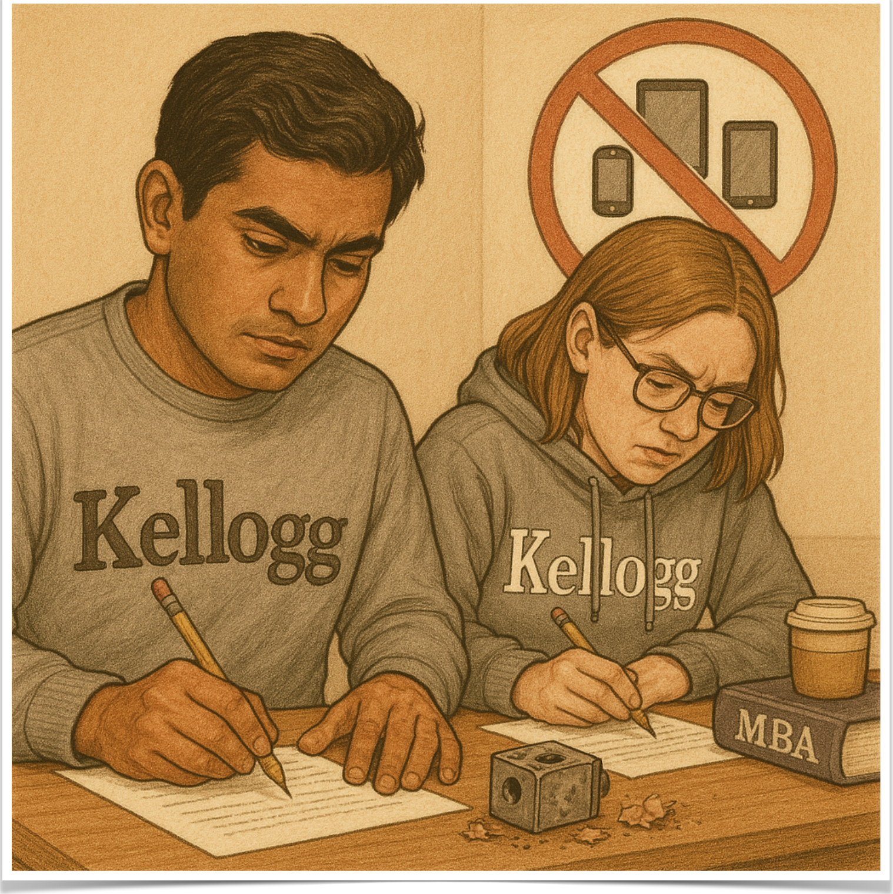
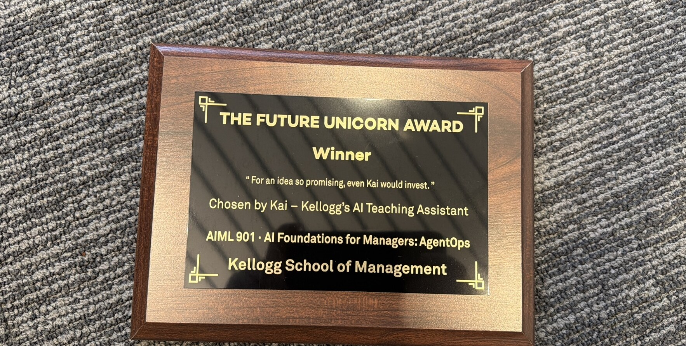

Welcome! · Kellogg School of Management · July 9–10, 2026
Today · Thursday, July 9
12:00–12:30
Welcome & lunch
12:30–1:30
Speed Talks: State of AI in Education across Universities · Sébastien Martin
2:00–3:00
Paper + Results & Publication Strategy · Rob Bray
3:30–5:00
AI in Teaching Lab · Sébastien Martin
5:30–6:30
Group Discussion 1: Innovating with AI in the Classroom · Jun Li
7:00
Conference dinner at The Barn Steakhouse
You are here
Global Hub, Room 4101. All sessions in this room, with coffee breaks in between.
Dinner, 7:00 PM
The Barn Steakhouse · 1016 Church St, Evanston (entrance in the rear alley).
Tomorrow
Breakfast from 8:30 AM · sessions 9:00–12:30 · lunch & farewell, done by 1:00 PM.
Northwestern|Kellogg
Speed Talks
Short, informal updates from each school on the state of AI in education.
AI in Education WorkshopKellogg School of Management Thursday, July 9, 2026 · 12:30–1:30 PM
Speed Talks
Today’s speakers
Christian Blanco
Ohio State
Mi Kyong Wilson
Ohio State
Pnina Feldman
UVA Darden
Arthur Delarue
UVA Darden
Zonghao Yang
Stevens
Wenchang Zhang
Indiana Kelley
Ben Collier
Carnegie Mellon
Ken Moon
Cornell
Blair Flicker
South Carolina
Minje Park
HKU
Jun Li
Michigan
Rob Bray
Northwestern
Northwestern|Kellogg
AI in Teaching Lab
A live tour of AI in my teaching, and of the computer agents that build it.
Sébastien MartinAssociate Professor of Operations · Northwestern Kellogg AI in Education Workshop · July 9, 2026 · 3:30–5:00 PM
Slides & materials
sebastienmartin.info/p/kaihw.html
Introduction
Navigating a technology disruption

Damage controlThe new technology hurts our old way of doing things, and we try to work around it.Build something newOr we use that same technology to do things we could never do before.
Introduction
Our 90 minutes
1
The many ways to use AI in teaching
~45 min
2
Leveraging computer agents
~45 min
Show you what is possible when you go all in on AI — and the path to get there.
Student-facing AI
Student-facing AI
What my students see: an AI tutor in every course, and cases they can talk to.
Student-facing AI
Live demo
Using an AI tutor
Kai, Kellogg’s AI TA
24/7 Q&A on the course material.
AI homework: interactive, personalized assignments, hard to plagiarize by design.
Reports back to the instructor: misconceptions, engagement, who is lost.
Try the real week‑2 homework yourself
Student-facing AI
Does AI homework work? A mini-RCT
The experiment
Fall 2024: 19 MBA homeworks, randomized per student: custom AI tutor vs. base ChatGPT (same GPT-4o, same problems). 139 students, ~27k questions answered.
Students prefer the AI tutor, and more so on harder assignments.
Honest nulls: quiz scores, time spent, completion unchanged.
AI homework increases student satisfaction, Bray & Martin (major revision at INFORMS Transactions on Education).
Student-facing AI
Live demo
AI cases you can talk to
wsj.com/tech/ai/…the-classic-case-study
Students interview the characters of a real case. The QR opens the article and a live demo anyone can try.
Student-facing AI
What AI adds to a case
It adapts
To each student and each goal. An international student can ask what a US school district is; another dives straight in.
It feels real
Students practice the human side: communication, personalities, pressure.
Ask the right question
Real problems have no guidebook. Students learn to figure out what they need to know, and how to get it.
The tutor is built in
Characters can share data, software, or documents, and walk students through them.
Better as AI improves
Voice is already arriving. Every model upgrade makes the characters, and the case, better.
Empower the instructor
Building and changing even complex simulations is easy now. You stay in control.
Professor-facing AI
Professor-facing AI
My latest experiments.
Professor-facing AI
AI homework needs AI evaluation
AI homework
Personalized: every submission is different.
A great learning tool.
Nearly impossible to grade by hand.
AI evaluation
Grades and rich feedback for every student.
Surfaces the important issues to the instructor.
Makes the homework itself better.
Professor-facing AI
How to do AI evaluation?
LLMs are unreliable graders but reliable comparators: ask which is better, many times.
Professor-facing AI
Early tests: AI-judged awards
Students pitch their final project to the AI
▼
The AI grades and picks the award winners
▼
The AI gives feedback for students to improve
“The time unlocked and depth of feedback is unmatched.”

Professor-facing AI
This year: grading a whole course with AI
The AI surfaces and ranks; the instructor decides.
Teaching AI
Teaching AI: what my MBAs built in five weeks
Track medication adherence by texting patients personalized reminders
Track competitor clinical trials to inform pharma strategy
Answer customer questions automatically and route complex ones to experts
AIML 901 “AgentOps” No coding background · 193 projects
Turn course syllabi into study plans with deadlines
Sort and prioritize a travel agency’s inbox, flagging urgent requests
Monitor news and alert retail investors when their stocks are at risk
Teaching AI
My experience with AI in education
Four years in, the one thing that predicts success: how involved the instructor is.
Leveraging computer agents
Leveraging computer agents
In my opinion, the most empowering way to use AI as an instructor.
Leveraging computer agents
From ChatGPT to Claude Cowork
2022
2023
2024
2025
2026
ChatGPT
LLMs can write and answer questions
GPT-4 & the AI wave
LLMs can be really smart
Agentic AI
LLMs can “reason” and use tools
Claude Code & coding agents
LLMs can work independently on complex tasks
Claude Cowork & computer agents
LLMs can control a computer and do real work
Leveraging computer agents
Computer agents do the work
A chatbot talks about your work. A computer agent does the work, on your files and your computer.
Live: Claude Cowork · Claude Code
Leveraging computer agents
Live demos
What can a professor hand to an agent?
Grade a stack of homework
Help you make slides
Build an interactive demo
Analyze course feedback
Draft AI homework & rubrics
Create & iterate on AI prompts
Find the student who needs you
Kill the boring parts
Just a few examples — we’ll do some of these live, right now.
Leveraging computer agents
Getting started
No coding required. Talking is the interface; iterating is the skill.
Pick one real task from your week, and give the AI your actual files.
Start with Claude Cowork (desktop app), graduate to Claude Code (terminal). Codex on the OpenAI side.
Cost: roughly $20–200/month, typically reimbursable from research accounts.
Build, build, build. Instructor involvement is the whole game.